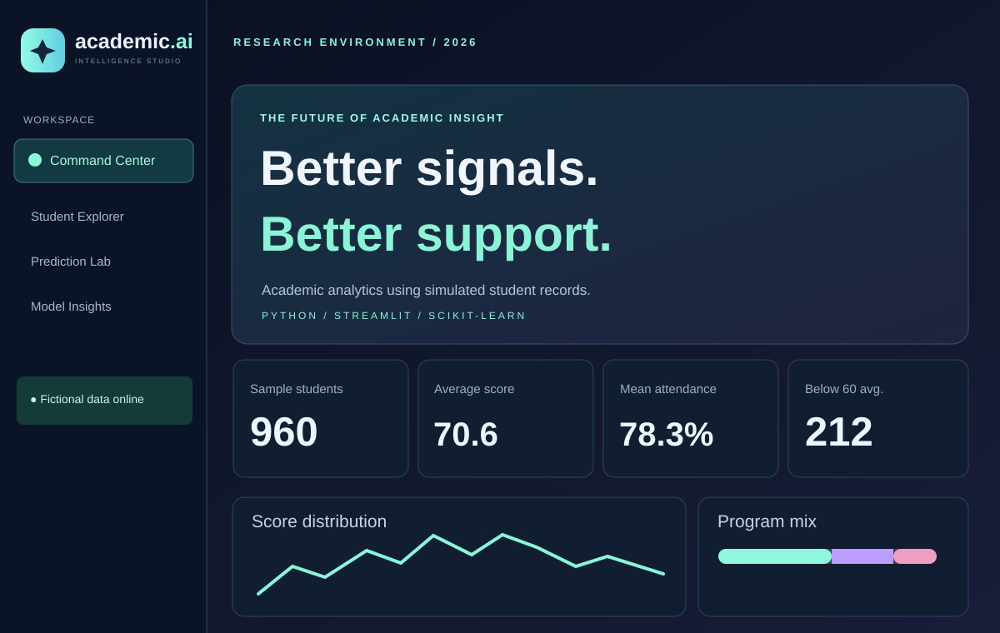

DATA SCIENCE / APPLIED MACHINE LEARNING / 2026
Academic Intelligence AI.
An interactive academic analytics research platform exploring how student performance and attendance data could support earlier intervention planning. The demo uses entirely fictional records and outcomes.

Dashboard artwork inspired by the actual Streamlit V2.1 interface — not a captured screenshot.
The challenge
Student academic information lives across multiple data points. This project brings descriptive statistics, search/filter tools and a model-based support-priority experiment together in one dashboard. Its research goal is to evaluate an ML workflow, not to prescribe educational decisions.
What I built
Command Center: Dataset-level KPIs and score/program distributions. Student Explorer: Search, filters, and profile-level breakdowns. Prediction Lab: A trained machine-learning model producing scores for fictional scenarios. Model Insights: Evaluation metrics and error analysis, including precision, recall and confusion matrix.
Technology stack
Python, Streamlit, Pandas, NumPy, scikit-learn and Plotly. The clean demo source, tests and setup instructions are publicly available on GitHub.
Limitations and future work
Labels and student data are simulated, so model scores do not represent validated dropout probabilities. Next steps for a real institution would include explicit consent, security controls, historical outcome labels, external validation, calibration and fairness assessment.